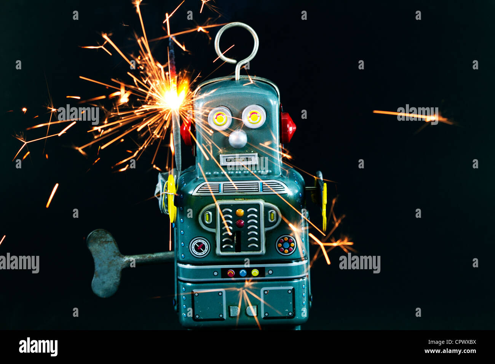

"Does not compute", and variations of it, is a phrase often uttered by computers, robots, and other artificial intelligences in popular culture. The phrase indicates a type of cognitive dissonance on the part of the machine in question. The expression of the phrase "does not compute" by robots or computers attempting to process emotions, contradictions or paradoxes is frequently satirized in popular culture, often leading to the machine's inaction, malfunction or self-destruction. The phrase was used as a catchphrase by the television show My Living Doll in 1964. It was further popularized in Lost in Space (1965) as a catchphrase often uttered by The Robot character.
The problem of how to hold the result of a computation that is not a number is genuine (for example, 1/0) and represented a problem for early computers that would experience divide-by-zero errors or other mathematical paradoxes that software had not yet been written to deal with, leading to a computer crash. The NaN and related data types were invented to solve this problem."
The phrase was often present in stories which carried a theme of the superiority of human emotion over limitations within the logic utilized by machines. Despite the superior ability of computers to calculate and process information, their lack of emotion and randomness made them unable to resolve cognitive dissonance, which often led to the output of "Does not compute". It was usually the computer's response to information which it had received but could not reconcile with other information it already held to be true. It could also be seen as a depiction of the limited (and thus flawed) nature of a machine's programming; due to its pre-programmed nature, it would be unable to adapt itself to circumstances beyond the scope of its programming, as opposed to humans who could adapt to such unforeseen events.
The phrase was used in the sitcom My Living Doll in which the android protagonist, Rhoda Miller, uttered the phrase regularly when confronted with contradictory information, usually in relation to human behavior. On a few occasions when she did understand the information, her response was "that does compute".
Perhaps the most famous use of the phrase is in the television series Lost in Space where the robot often says, "It does not compute!", to which Dr Smith would give a reply of "What do you mean it doesn't compute, you ninny?!" or something to that effect. However, the robot did not shut down or explode; it simply refused to continue working until a more logical command was given.
In some cases, presenting a computer or robot with such a contradiction would cause it to violently self-destruct. This occurs in several episodes of the original series of Star Trek (e.g. "I, Mudd", "Requiem for Methuselah", "The Return of the Archons" and "The Changeling"), as well as in the finale to Logan's Run. In the episode of the 1968 television series The Prisoner entitled "The General", Patrick McGoohan causes a supercomputer to explode by feeding it the question "Why?".
Such depictions reflect common perceptions of real computers at the time, which usually lacked friendly user interfaces. Computers often responded to bad input with an error message on the same order of utility as "does not compute", although self-destruction was an unlikely result from bad inputs or insoluble problems fed into the computer. The concept of a "killer poke", however, refers to user input intended to induce hardware damage. (See also "Halt and Catch Fire".)
Although not using the phrase "does not compute", the short story "Liar!" (1941) by Isaac Asimov is a striking early example of cognitive dissonance leading to a robot's self-destruction: that whether it lies, tells the truth or says nothing, it will cause humans injury, so being unable to avoid breaking Asimov's First Law of Robotics: "A robot may not harm a human being, or, through inaction, allow a human being to come to harm." This example is a more sophisticated treatment of cognitive dissonance leading to self-destruction than most examples from later television science fiction. Asimov explored the theme of AI cognitive dissonance at length in his robot stories.
In the Doctor Who story "The Green Death", the Doctor attempts to put the computer BOSS, which claims to be infallible, out of action using the liar paradox. BOSS feigns suffering from confusion as he appears to try to resolve the paradox, but has in fact summoned security.
By the 1990s, with the rise of personal computers and the graphical user interface, the public conception of computers became more friendly and sophisticated, and the image of the computer intelligence unable to respond gracefully to unexpected inputs has gradually faded away from fiction, though the phrase did show up in Star Wars: Episode I – The Phantom Menace as comic relief in 1999. It re-appeared in the CGI series Star Wars: The Clone Wars in an episode on the planet Ryloth, when a number of Twi'Lek characters attacked a robotic general, much to the robots' fatal surprise.
The Star Trek franchise once again used a variation of the phrase in the 2009 film Star Trek, in which the character James T. Kirk used the phrase to goad Spock (a character known for his propensity for logic) to anger, in order to make the latter realize that he was emotionally compromised.
In the film Alien, Captain Dallas (of the Nostromo) uses 'Mother' – the ship's computer – to evaluate the ship's procedures for dealing with the alien, but receives unfruitful responses in greenish letters: "Unable To Compute" and "Available Data Insufficient". Finally, he types in "WHAT ARE MY CHANCES?" The answer returns: "Does Not Compute."
In a Futurama episode, Leela's attempt to thwart Robot Santa with a paradox was stopped by his "paradox-absorbing crumple zones". In addition, the robot character Bender referred to the phrase as an "old robot saying" in "A Taste of Freedom". In "A Fishful of Dollars", Fry asks for anchovies (extinct in the Futurama universe) which eventually makes a chef-robot repeat, "Does not compute," before exploding.
In the Red Dwarf episode, "The Last Day", the android Hudzen is told by Kryten that silicon heaven does not exist. Hudzen, a believer in the android afterlife, cannot reconcile the contradiction and shuts down. Kryten, also an android, is not harmed by this dissonance, as he believes he is simply lying.
The seventh track from Prince's album 1999 is titled "Something in the Water (Does Not Compute)".
A popular web series titled Does Not Compute was created by Michael Swaim.
The Simpsons writers often parody this phrase and its implications. In one episode, Homer said he wanted to make a robot repeat the words "It does not compute" until it exploded by giving it illogical commands. In the episode "Trilogy of Error", Lisa's school project, a grammar-fixing robot, explodes after hearing too much bad grammar from the mobsters led by Fat Tony. The robot repeats the phrase "Bad grammar overload!" as a parody of the original phrase. In "Treehouse of Horror XIX", there is the following dialogue:
Destructicus: That does not compute.
Marge: (sternly) Really?
Destructicus: Well, it computes a little.
In The IT crowd episode "The Dinner Party", the phrase is said by Jessica, one of Jen's friends, to Moss.
In an episode of The Sarah Jane Adventures, "Warriors of Kudlak: Part 2", the computer Mistress responds to the news of peace with "Peace does not compute", as it was only programmed for war situations.
In Ghost in the Shell: Stand Alone Complex, one computer developed the ability to pose paradoxes to other computers, causing one computer to go in a corner and sit, pondering "does not compute".
The phrase is also the title of a song sung by the robotic vocalist ALT in the arcade game Pop'n Music 20 Fantasia.
In Destiny 2, "Does not compute" is a scout rifle.